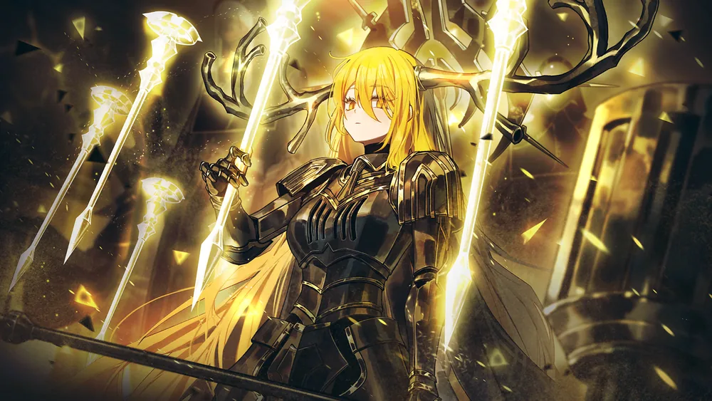

Obsidian Covenant
I heard His voice, His promise: "Everything that exists has meaning."

Cometh the Nail
Summoneth the Nail
I Sever Thine Advent!
Witness Ye in Silence
I heard His voice, His promise: "Everything that exists has meaning."
All allied Charge Identity take -2% damage this turn for every allied Charge Identity on the field at Combat Start (max -10%)
Identity Acquisition
And thus saith the Lord: "Unto Le Noir be contentment, and unto the Brand Manager be tribulation and hammer." With this sacred duty in mine hand, I call thee to answer: art thou an adherent of the rules, or... a fomenter of anarchy?
Morning Greeting
Lo, a new season is upon us again. Once more shall we march forth in justice and valor. Lord, give me strength to gallop on through the trials in unfaltering adamance. Let Le Noir be laid upon the pedestal of fashion, which the hundreds of millions of customers at the Grand Magasin may worship and adore.
Afternoon Greeting
As sunlight groweth intense, those abominable Néants press upon mine eyes... Though selfsame may their ultimate purpose be to the Rouges' endeavor... I would be loath to squander my vigilance on idlers who do naught but bask under the light in torpid indolence.
Evening Greeting
Thus cometh the season's end. Brutal were the toils, and in our march, the many lames of the armor bestowed upon thee have been weathered and spent. The Alterationist must be quite occupied at the moment... But pray, bestill thy heart, dearest Rocinante, for when today's labors end, we shall pay a visit to the fourth floor.
Chatter #1
Our reputation hath taken a downward trend following our surrender of the Luxury Hall to the Rouges... In seasons such as these, stratagem of premiumization and artificial scarcity have always proved to prevail. ... To preserve the value and worth of our brand, I hereby issue a general recall. First, let us commence by recalling products sold to Le Kaki.
Chatter #2
Though we have lost our stronghold on the second floor, prithee, do not lose heart! 'Tis not solely the Luxury Hall wherein the glory of Le Noir lies. I am the Brand Manager—'tis my responsibility to embrace even the Noirs who are ignoble, and assist them to raise their prestige to a level befitting that of Le Noir's name. Do what thou canst to help.
Chatter #3
Thy warm consolation I receive with gratitude... yet my heart hath already sworn fealty unto a Voice, and I shan't fain abandon my loyalty. ... Though unaware may the Obsidian God be... of my devotion.
Post-Uptie Chat 1
'Tis no fancy of mine that the noble Voice showeth strange indifference to the sport of the "false god"... Is the breaking of order, too, but compliant threads of destiny as written...? Or does He see fit to assay my worth? *sigh* I must comb these snarls from mine own thoughts.
Post-Uptie Chat 2
I had thought I settled this matter beneath silence's cloak, outside even the Floor Managers' peering eyes... So how have the wretched Rouges intercepted the Golden Skein meant for the Alterationist's hands? If none of us Noirs have tattled this tale, then... Could it be—as preposterous a thought it is to entertain—that the false god hath stolen a glimpse of the prophecy?
Idle
... Silence hath befallen the shop. O Voice... whither have You gone? We of the Noir await Your coming.
Uptying
The prophecy shall have its due—the dream of the Rouges will be consumed by stains of evil. I angle these nails mine upon thy dream of avarice and gluttony... and bring this hammer down with all my might.
Deployment
A hammer once gripped must be brought down—that is simply the natural law.
Stage Entry
Thou shalt make way in anticipation of my coming. Do this, and thy justice shan't fall to doubt.
Viewed in Battle
Shh. Witness thou in silence, for the Obsidian God shall bestow upon us a blessing of His Voice anon.
Commencing Attack
I shall be the vanguard, so that thou mayest find safety behind me.
Enemy Stagger
Witness thou in silence.
Staggered
... Profane.
Enemy Killed
God's vengeance is swift and final.
Death
I too... shall be... eternally preserved...
Check Passed
There can be no hesitation nor failure, for the Obsidian God watcheth over us.
Check Failed
Despair ye not in the face of misfortune; 'tis but a portent of imminent providence.
Victory Cry
Though many have fallen to the ground, forsooth... Thou needst not concern thyself, for every moment of our suffering is etched into and remembered by Grand Magasin Sisyphe itself. The fallen Noirs, too, are fabric and pillar... who shall with us together weave eternity.
Extra Conditions Fulfilled
... An orderly conclusion, drawn exactly as foretold by fate. Verily, the Obsidian God's wisdom is vast.
Defeat Wail
I... have followed the path of unerring order... and never veered off course... Even when... the price of that devotion... was to be my life...
Le Noir Identity deployed in Battle
Act ye as order commandeth.
Haute Couture::The Crimson God of Le Rouge Sinclair deployed in Battle
Mm... Thoroughly unpleasant this may be, yet it must be observed. O profane one, I shall stay thy judgment for the present.
Gaining Sanctum of Conservation (Don Quixote)
Behold, I proclaim this land a hallowed sanctum. Radiant shall it shine.
rowspan="2"|Using Skill 1-2 - Judgment!
Radiance!
rowspan="2"|Using Skill 3-2 - With Each Smite, I Sever Thine Advent!
Boundless is the weight of thy sins... ... Divine punishment shall smite thee!
Sumber data: Limbus Company Wiki. Angka dan teks mengikuti versi wiki saat situs ini dibangun.